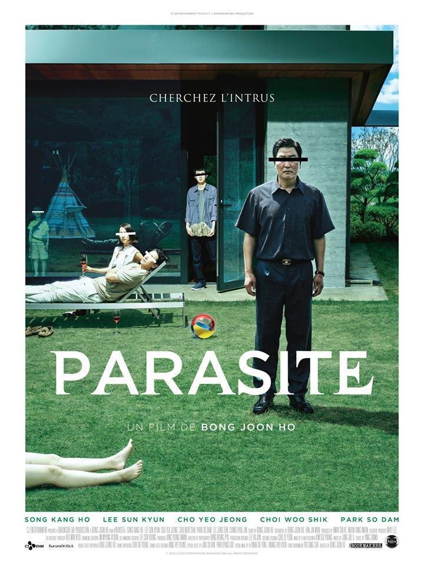
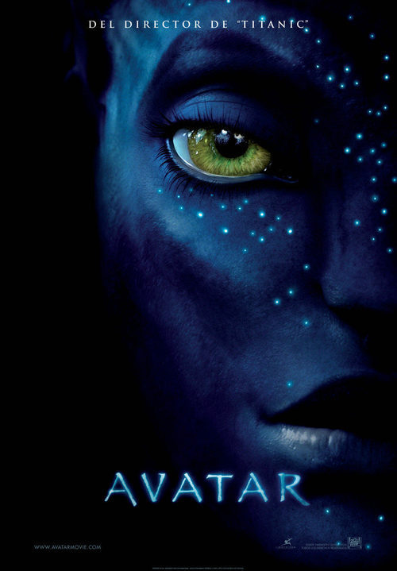
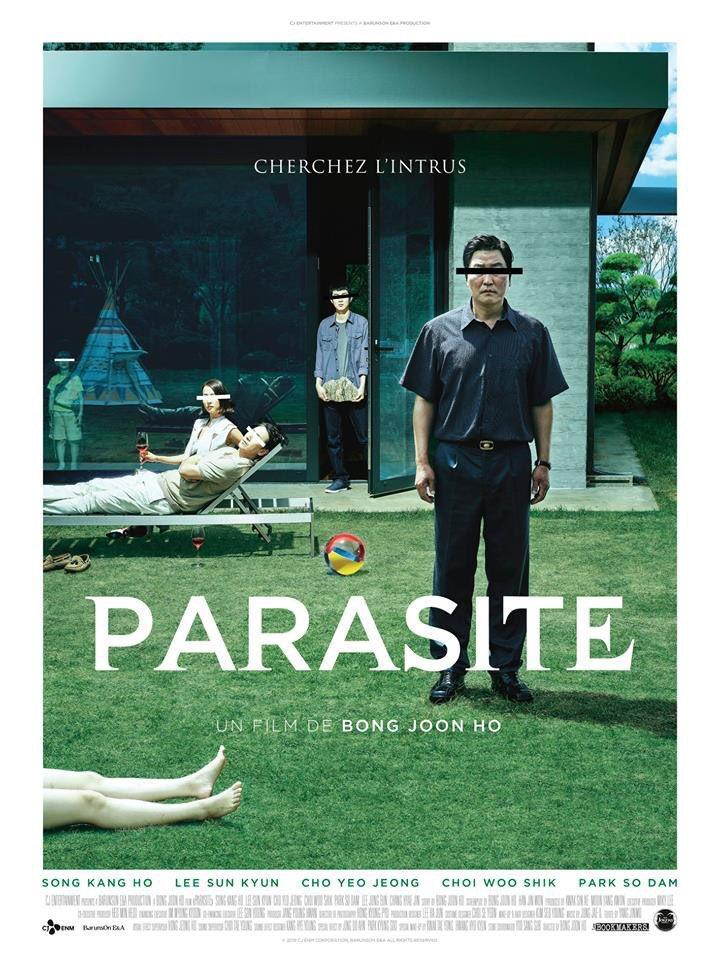
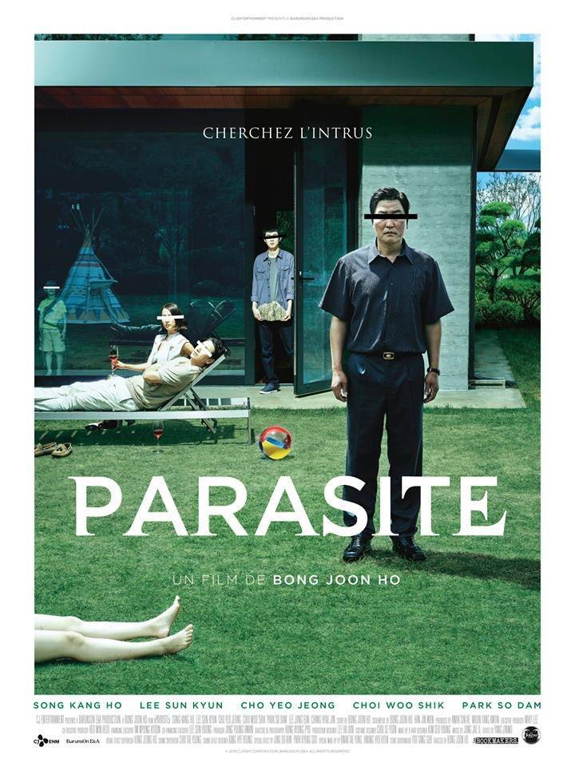
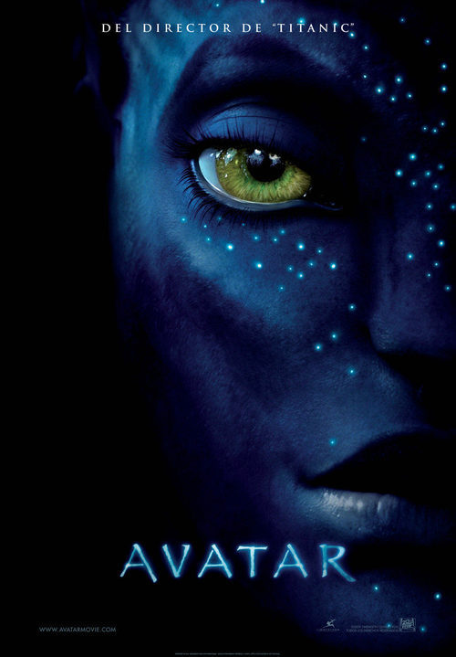
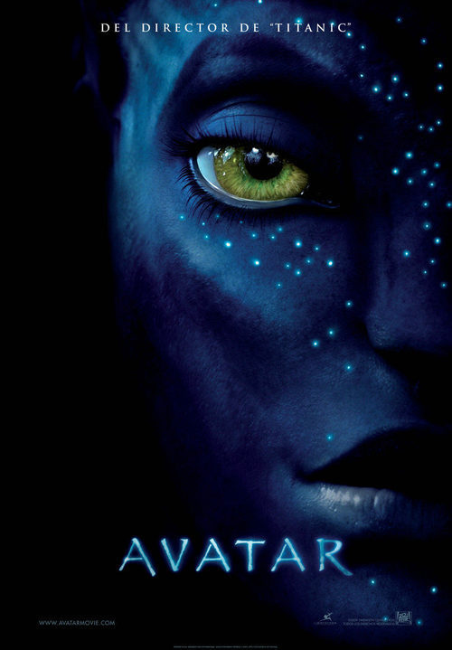

Home
Géneros
Favoritos
Todo lo que tenes que saber sobre las películas y series del momento
Películas populares
Series populares
Lo más visto en películas


Lo más visto en series
 Home
Home
Home
Home


 

 
